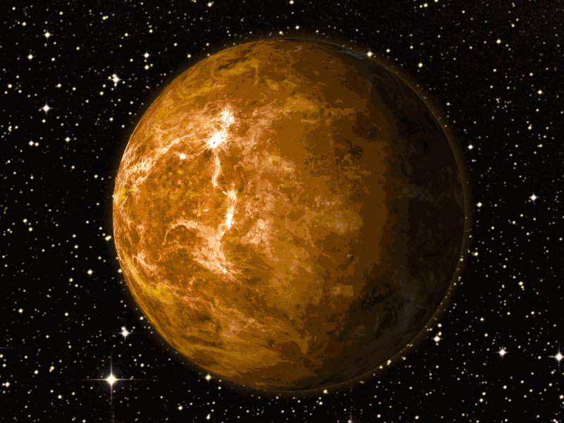

| 
Vénus est la deuxième planète du Soleil à avoir une orbite circulaire. L'atmosphère de Vénus contient: diverses impuretés HF, HC1, SO2, CO, ainsi que du CO2 (97%), N2 (3%), H2O (0,05%).
En raison de l'effet de serre, la planète est constamment chaude. L'atmosphère, comme une couverture de gaz carbonique, emprisonne la chaleur provenant du soleil. En conséquence, une grande quantité d'énergie thermique s'accumule, de sorte que la température de l'atmosphère devient plus élevée que dans le four. Les photographies radar montrent un grand nombre de cratères, de montagnes et de volcans.
La surface de la planète est composée de centaines de milliers de volcans. Il y a ceux qui atteignent une hauteur de 3 kilomètres et une largeur allant jusqu'à 500 kilomètres. Mais la plupart d'entre eux ne dépassent pas 100 mètres de hauteur et 3 kilomètres de diamètre. Le processus d'éruption sur Vénus prend beaucoup plus de temps que sur notre planète. La pression à la surface de Vénus est d'environ 107 Pa.
Et les substances qui composent la surface de la planète sont similaires aux roches sédimentaires terrestres. Vénus se rapproche le plus de la Terre. La distance entre notre planète et Vénus n'est parfois pas supérieure à 45 millions de kilomètres. Mais la très forte nébulosité de la planète ne permet pas de bien voir sa surface à l'aide de télescopes. Vénus est plus facile à trouver dans le ciel que les autres planètes.
La forte densité de nuages réfléchit la lumière du soleil, ce qui rend la planète très lumineuse. Tous les 7 mois pendant quelques semaines, Vénus est l'objet le plus brillant du ciel occidental le soir. Après 3 mois, il commence à se lever 3 heures plus tôt que le Soleil et se transforme en une étoile du matin étincelante dans la partie orientale du ciel. Il est bon d'observer Vénus 1 heure avant le lever du soleil et 1 heure après le coucher du soleil. Cette planète n'a pas de satellites. |